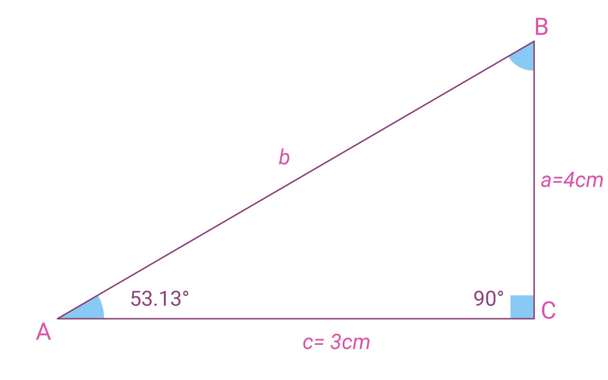
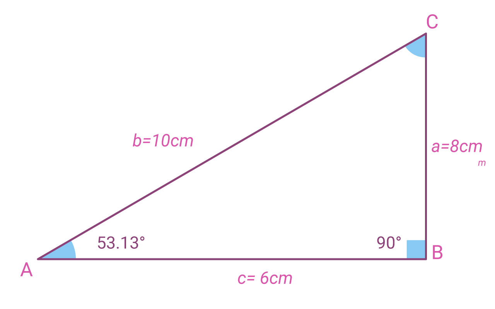
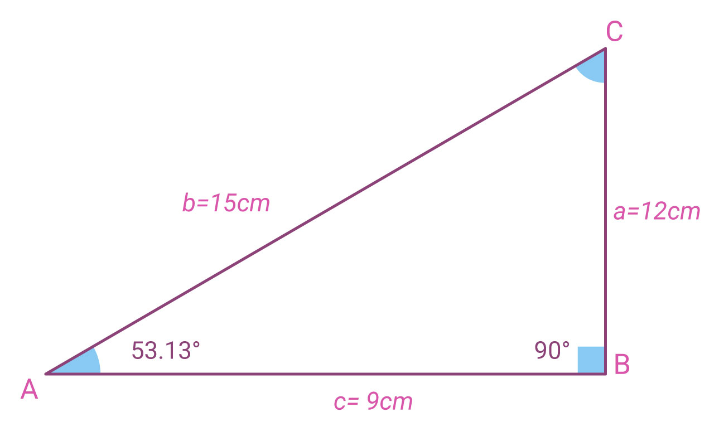

Ahora propondremos un triángulo semejante . ¿Recuerdas cuál es la condición de semejanza?
Dos triángulos son semejantes cuando tienen los mismos ángulos y sus lados homólogos son proporcionales, (Tienen misma forma pero diferente tamaño).

Figura 4 Imagen propia.
Como puedes observar la razón de proporcionalidad del siguiente triángulo es r=2 en relación con la figura 4.

Figura 5 Imagen propia.
Como puedes observar la razón de proporcionalidad del siguiente triángulo es r=3 en relación con la figura 4.

Figura 6 Imagen propia.
A continuación te invitamos a realizar las siguientes actividades.